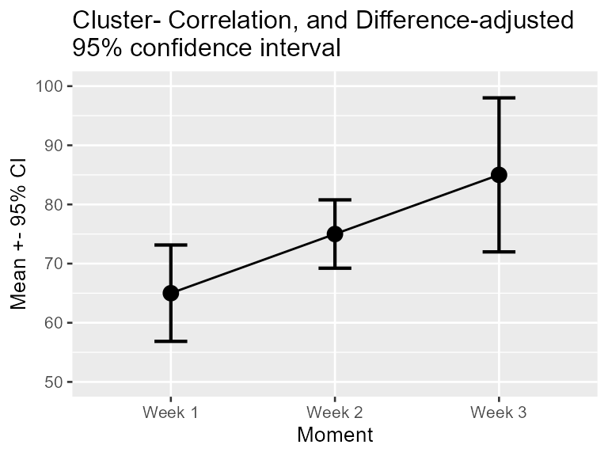

The package superb facilitates the production of summary
statistic plots having adjusted error bars (Cousineau, Goulet, & Harding, 2021). Error
bars are measures of precision; they are meant to convey some
indications of the trust we can place in a given result. Those results
that come will large error bars (wide intervals) should be considered
less reliable that those with short error bars.
Error bars, which are drawn from measures of precision, comes in many
flavors. There is the simple standard error (SE), the more
famous confidence interval (CI), and new proposals such as the
highest density interval (HDI). The package superb
has build-in functions for both the SE and CI, but any other measure of
precision can be added (as shown in Vignette
4).
All measures of precision are tailored for a given statistic. Hence, we have the standard error of the mean, the standard error of the median, the confidence interval of the skew, etc. For each and every statistic, there is a corresponding measure of precision. In what follows, we discuss the confidence interval, but everything that follows apply equally well to any measure of precision.
The basic confidence interval can be termed a “stand-alone” confidence interval because it indicates the precision of a statistic in isolation. It is useful to compare this statistics to a criterion performance or any a priori-determined value. As shown in Vignette 2 and Vignette 3, such “stand-alone” measures are inadequate when an observed result is to be compared to other observed results (also see Cousineau, 2005, 2017).
In order to use superb, four choices need to be made,
described next. Prior to that, it is necessary to check the data format.
Herein we illustrate the means with 95% confidence intervals; these can
be changed, as shown in Vignette
4.
The format of the data in superb follows the general
convention “1 subject = 1 line”, that is, all the information regarding
a given participant must stand on a single line. This format is called
in R the wide format; in SPSS, SAS and other statistics
software, this is the standard data organization. Further, the data must
be contained within a data.frame with named columns. It is
easy to go from wide format to long
format, with, e.g., Navarro’s wideToLong excellent
function (Navarro, 2015).
As an illustration, we use the following ficticious data set showing the performance of 15 participants on their motivation scores on Week 1, Week 2 and Week 3 for a program to stop smoking.
#Motivation data for 15 participants over three weeks in wide format:
dta <- matrix( c(
45, 50, 59,
47, 58, 64,
53, 63, 72,
57, 64, 81,
58, 67, 86,
61, 70, 98,
61, 75, 104,
63, 79, 100,
63, 79, 84,
71, 81, 96,
72, 83, 82,
74, 84, 82,
76, 86, 93,
84, 90, 85,
90, 96, 89
), ncol=3, byrow=T)
# put column names then convert to data.frame:
colnames(dta) <- c("Week 1", "Week 2", "Week 3")
dta <- as.data.frame(dta)The mean scores per week is illustrated below:
Figure 1. Mean scores along with 95% confidence interval per week for a program to stop smoking.
Note that missing data are not handled by superb. The
cells with NA must be removed or imputed prior to perform the plot.
In Figure 1 above, did you look at the result of, say, Week 1, in isolation? or did you compare it to the results obtained in the other weeks? The second perspective is actually to look at the difference between the results. if such is the case, the error bar shown on this plot are actually misleading because they are too short. The reason for that is further explored in Vignette 2.
In most experiments, one condition is compared to other conditions. In that case, we are interested in pair-wise differences between means, not by single results in isolation. Yet, the regular confidence intervals are valid only for results in isolation. Whenever you wish to compare a result to other results, to examine differences between conditions (which is, most of the time), you need to adjust the confidence interval lengths so that they remain adequate inference tools.
In superb, you obtain an adjustment to error bar length
with an option for the purpose of the plot. The default
purpose = "single" returns stand-alone error bars (as in
Figure 1); purpose = "difference" returns error bars valid
for pair-wise comparisons. The minimum specification for the data frame
above would therefore be
superbPlot(dta,
WSFactors = "Moment(3)",
variables = c("Week 1", "Week 2", "Week 3"),
adjustments = list(purpose = "difference"),
plotStyle="line"
)Figure 2. Mean scores along with difference-adjusted 95% confidence interval per week for a program to stop smoking.
The first argument is the data.frame, in wide format (here
dta). The second argument describe the experimental design.
Here, there is a single within-subject factor (WSFactors),
called Moment. In within-subject factors, it is necessary
to indicate how many level the factor has (here 3). The third argument
indicates the columns in the data.frame containing the measurements.
Three columns are involved. The name must match the column names in the
data.frame. If unsure, check with
head(dta)## Week 1 Week 2 Week 3
## 1 45 50 59
## 2 47 58 64
## 3 53 63 72
## 4 57 64 81
## 5 58 67 86
## 6 61 70 98The argument in which the adjustments will be listed is called
adjustments which is a list with —for the moment— an
adjustment for the purpose of the plot:
purpose = "difference". The standalone CI is the default
(it can be obtained explicitly with purpose= "single").
These two expressions, single and difference, are from
Baguley (2012).
Note that the plot obtained is a ggplot object to which
additional graphing directives can be added. Figure 2 was actually
obtained with these commands:
superbPlot(dta,
WSFactors = "Moment(3)",
variables = c("Week 1", "Week 2", "Week 3"),
statistic = "mean", errorbar = "CI",
adjustments = list(purpose = "difference"),
plotStyle="line"
) +
coord_cartesian( ylim = c(50,100) ) +
ylab("Mean +- 95% CI") +
labs(title="Difference-adjusted\n95% confidence interval")+
theme_gray(base_size=10) +
scale_x_discrete(labels=c("1" = "Week 1", "2" = "Week 2", "3"="Week 3"))The graphic directives are applied to the whole plot. The reader is
referred to the package ggplot2 for more on these graphing
directives.
Is is known that within-subject designs are generally more powerful at detecting differences. The implication of this is that they afford more statistical power and consequently the error bars should be shorter. The stand-alone CI are oblivious to this fact; it is however possible to inform them that you used a within-subject design.
The method to handle within-subject data comes from the observation that repeated measures tend to be correlated (e.g., Goulet & Cousineau, 2019). Informing the CI of this correlation is a process called decorrelation. To this day, there exists three methods for decorrelation:
CM: this method, called from the two authors Cousineau
and Morey (Cousineau, 2005; Morey, 2008),
will decorrelate the data but each measurement may have different
adjustments;LM: this method, the first developed by Loftus and
Masson (1994), will make all the error
bars have the same length;CA: this method, called correlation-based
adjustment was proposed in Cousineau
(2019). As per CM, the error bars can be different in
length.The three methods were compared in Cousineau (2019) and shown to be mathematically based on the same concepts and estimating the same precision. It is therefore a matter of personal preference which one you use.
Figure 2 above will become Figure 3 if you add a decorrelation adjustment:
superbPlot(dta,
WSFactors = "Moment(3)",
variables = c("Week 1", "Week 2", "Week 3"),
statistic = "mean", errorbar = "CI",
adjustments = list(purpose = "difference", decorrelation = "CM"), #new!
plotStyle="line",
errorbarParams = list(width = .2)
) +
coord_cartesian( ylim = c(50,100) ) +
ylab("Mean +- 95% CI") +
labs(title="Correlation- and Difference-adjusted\n95% confidence interval")+
theme_gray(base_size=10) +
scale_x_discrete(labels=c("1" = "Week 1", "2" = "Week 2", "3"="Week 3"))## superb::FYI: The HyunhFeldtEpsilon measure of sphericity per group are 0.545## superb::FYI: Some of the groups' data are not spherical. Use error bars with caution.Unless you change the options to
options(superb.feedback = 'none'), the command will issue
some additional information. In the present data set, \(\varepsilon\) is 0.54 which is low. A
Mauchly test of sphericity indicates rejection of sphericity, so
interpret the error bars with caution. All the messages issued beginning
with "FYI" are just information. Hereafter, the warnings
are inhibited.
The stand-alone confidence intervals are appropriate when your sample
was obtained randomly, a method formally called Simple Randomize
Sampling (SRS). However, this is not the only sampling method
possible. Another commonly employed sampling procedure is cluster
sampling (formally Cluster Randomized Sampling, CRS). The CRS
is the only one (beyond SRS) where the exact adjustment is known (Cousineau & Laurencelle, 2016) and thus SRS
(no adjustment) and CRS (adjustments that tend to widen the error bars)
are the only two sampling adjustments currently implemented in
superb.
Other sampling methods includes Stratified Sampling, Snowball Sampling, Convenience Sampling, etc., none of which have a known impact on the precision of the measures.
Also, determine if the population size is finite or infinite. When the population under scrutiny is finite, you may have a sizeable proportion of the population in your sample, which improves precision. In this case, the error bars will be shortened.
These adjustments are implemented in superb with
additional adjustments, such as
# add (ficticious) cluster membership for each participant in the column "cluster"
dta$cluster <- sort(rep(1:5, 3))
superbPlot(dta,
WSFactors = "Moment(3)",
variables = c("Week 1", "Week 2", "Week 3"),
adjustments = list(purpose = "difference", decorrelation = "CM",
samplingDesign = "CRS", popSize = 100), #new!
plotStyle = "line",
clusterColumn = "cluster", # identify the column containing cluster membership
errorbarParams = list(width = .2)
) +
coord_cartesian( ylim = c(50,100) ) +
ylab("Mean +- 95% CI") +
labs(title="Cluster- Correlation, and Difference-adjusted\n95% confidence interval")+
theme_gray(base_size=10) +
scale_x_discrete(labels=c("1" = "Week 1", "2" = "Week 2", "3"="Week 3"))
As you can see, the adjustments can be obtained with a single option
inside the adjustments list. They are cumulative, i.e.,
more than one adjustment can be used, depending on the situation.